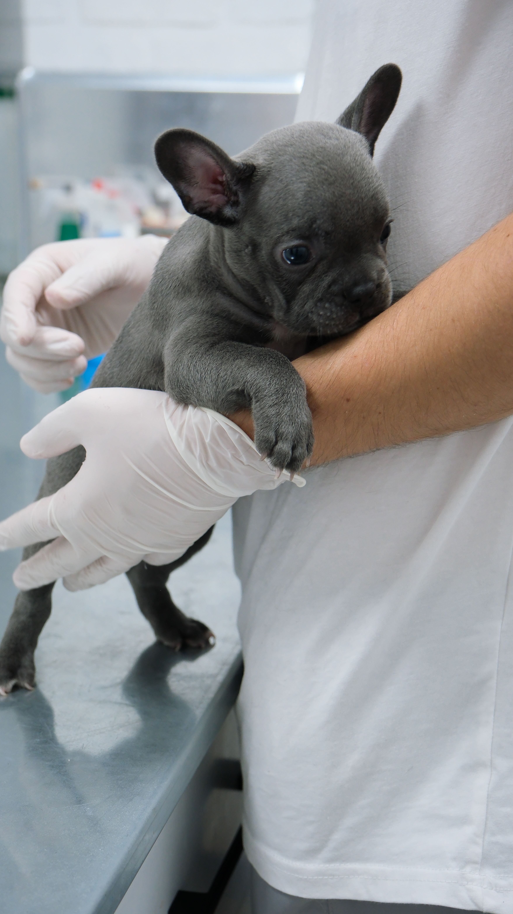
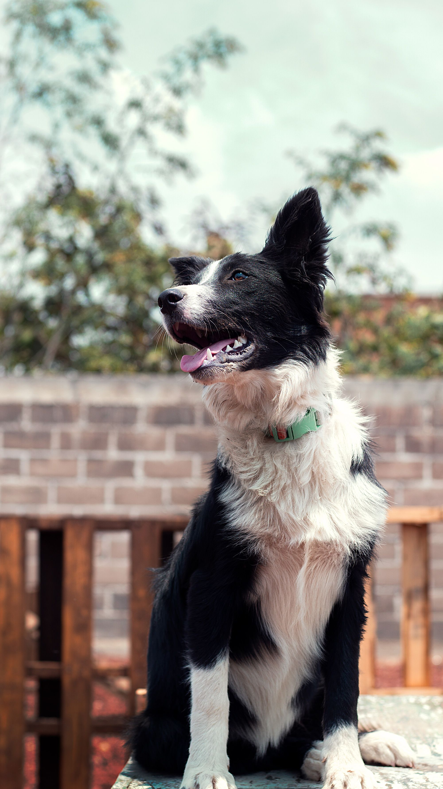
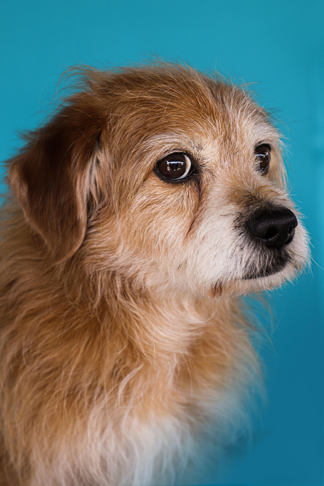

Clínica veterinaria en Pinto, Madrid
Más de 15 especialidades bajo un mismo techo, con el cariño y la profesionalidad que tu familia peluda se merece.

Quiénes somos
En PintoVet tratamos a cada animal como si fuera el nuestro. Nuestro equipo de veterinarios especializados combina tecnología de vanguardia con el trato más cercano y humano para que tú y tu mascota os sintáis en casa.
Ofrecemos más de 15 especialidades y atención de urgencias sin cita previa, porque sabemos que los animales no esperan.
Lo que hacemos
Todo lo que tu mascota puede necesitar, en un solo lugar.
Intervenciones quirúrgicas con los más altos estándares de seguridad y cuidado postoperatorio.
Laboratorio propio para análisis de sangre, orina y más, con resultados rápidos y precisos.
Diagnóstico y tratamiento de fracturas, luxaciones y lesiones del aparato locomotor.
Diagnóstico por imagen digital para una visión completa de la salud interna de tu mascota.
Exploración no invasiva de órganos internos para un diagnóstico preciso y sin dolor.
Seguimiento 24h con cuidados intensivos para que tu mascota se recupere en las mejores condiciones.
Fisioterapia y terapias de recuperación personalizadas para mejorar la calidad de vida.
Baño, corte, peinado y cuidado estético profesional para que luzcan siempre perfectos.
Asesoramiento nutricional personalizado para una alimentación sana y equilibrada.
Diagnóstico y tratamiento de enfermedades sistémicas y crónicas con seguimiento continuo.
Exploración mínimamente invasiva del sistema digestivo y respiratorio.
Limpieza dental, extracciones y tratamientos bucodentales para una sonrisa sana.
Electrocardiogramas y ecocardiografías para el cuidado del corazón de tu mascota.
Terapia acuática para la rehabilitación y el bienestar físico y mental.
Diagnóstico y tratamiento de alergias, infecciones y enfermedades cutáneas.


Sin esperas innecesarias
Rellena el formulario y nos ponemos en contacto contigo para confirmar la cita en el horario que mejor te venga.
Encuéntranos
C. Alfaro, 16
28320 Pinto, Madrid